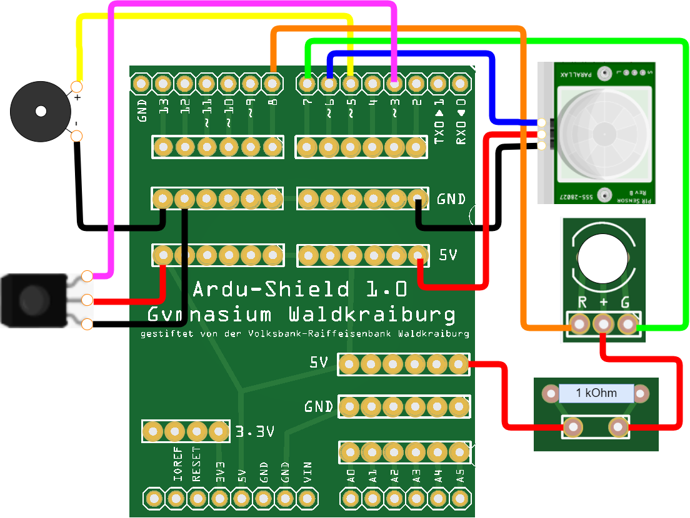

Zum Abschluss wollen wir unsere Alarmanlage über eine Fernbedienung ein- und ausschalten können.
1. Die Schaltung
Eine typische Fernbedienung für einen Fernseher sendet unsichtbare Infrarot-Strahlen (IR-Strahlen) aus. Im Fernseher ist ein IR-Empfänger eingebaut, der die Strahlen aufnimmt. Der Fernseher dekodiert anschließend das gesendete Signal und reagiert entsprechend.
Stecke zunächst den IR-Empfänger auf das Steckbrett und verkabele es wie folgt:
+Pol auf +5V
-Pol auf GND
S (Signal) auf Pin 3

2. Der Code
Definiere eine neue Variable fern vom Typ int und belege sie mit dem Wert 3 vor.
Setze in der setup()-Methode den pinMode des Pins fern auf INPUT.
Starte die serielle Übertragung durch den Befehl Serial.begin(9600) in der setup()-Methode.
Der Parameter 9600 gibt hierbei die Übertragungsrate in Baud an. Ein Baud entspricht einer Übertragungsrate von 1 Symbol pro Sekunde. In unserem Fall werden also 9600 Symbole pro Sekunde übertragen.